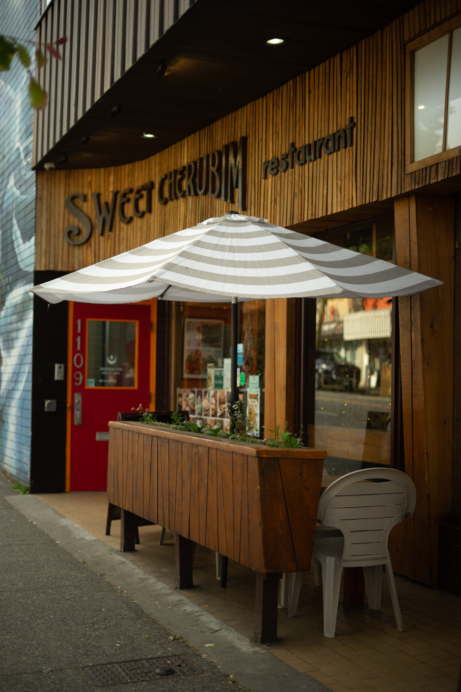

Sweet Cherubim

A long-standing Commercial drive staple. This is part restaurant part grocery shop. My go to here is a Potato Pea fried Samosa and Chocolate Macaroon cookie to go. Large selection of natural foods, drinks, vitamins, and much more. The other side of the shop is a sit-down restaurant with some super tasty traditional dishes.
Open interactive guide